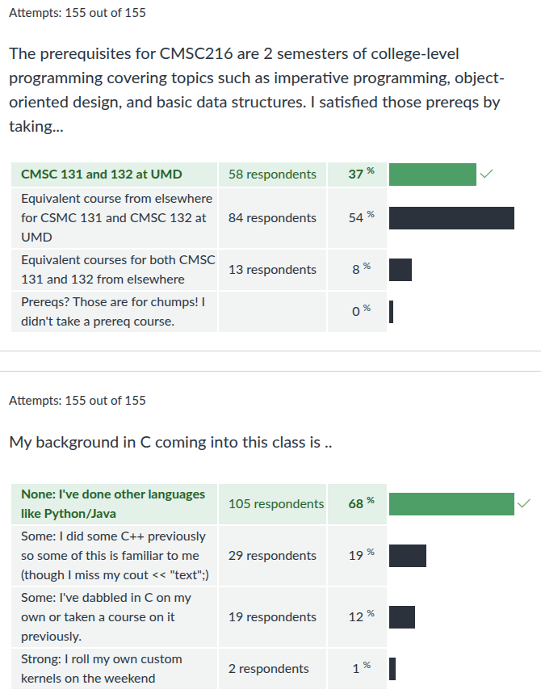
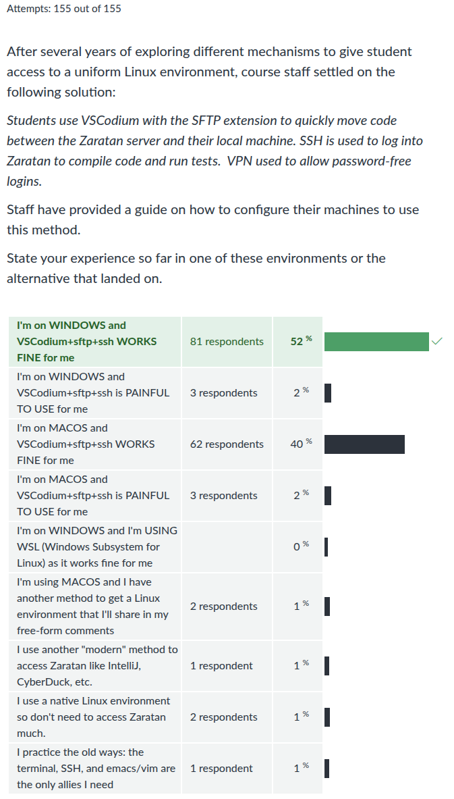
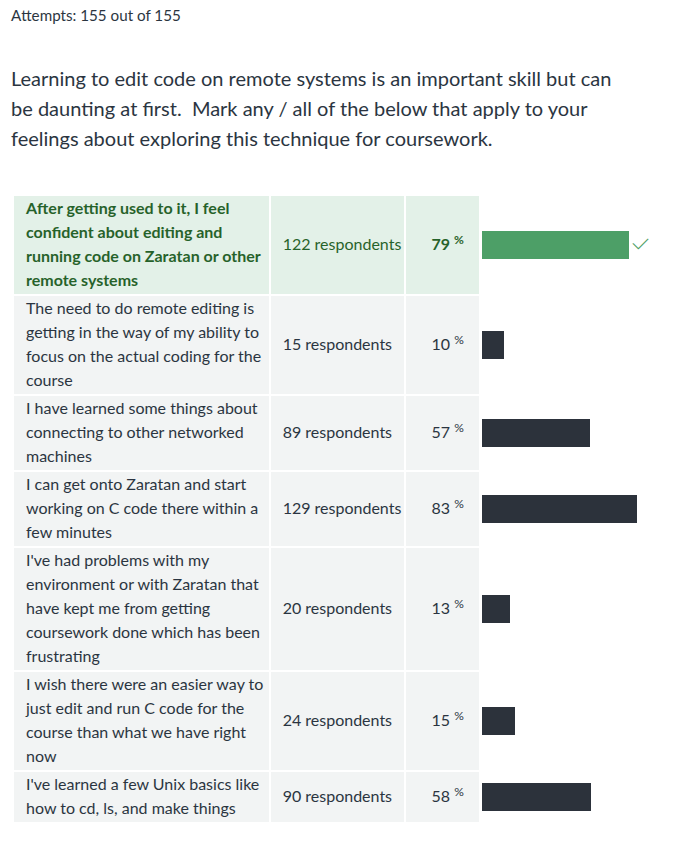
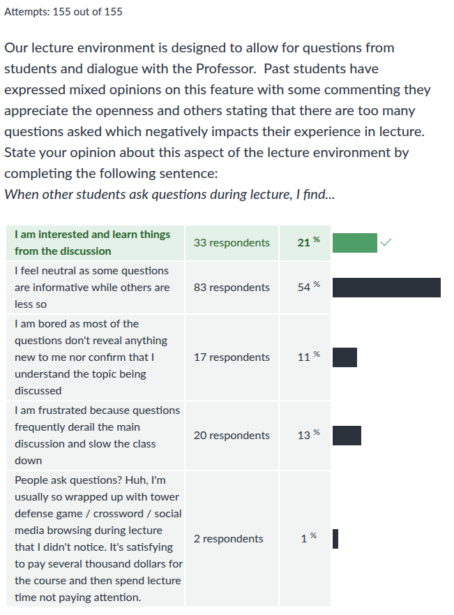
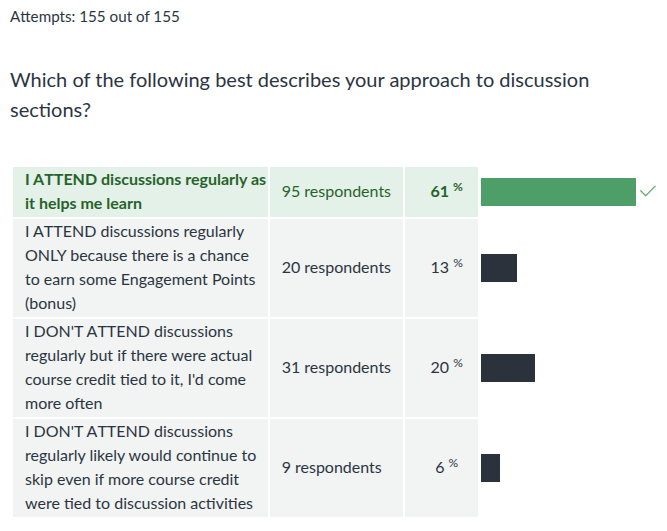
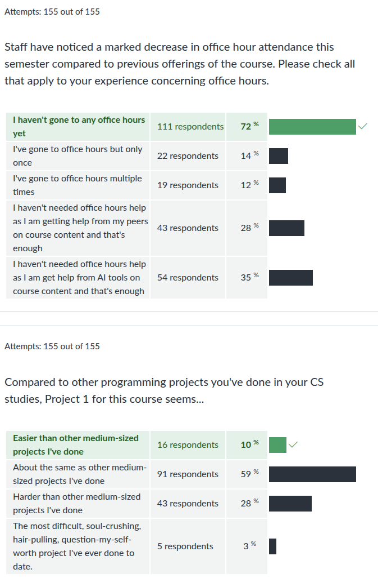
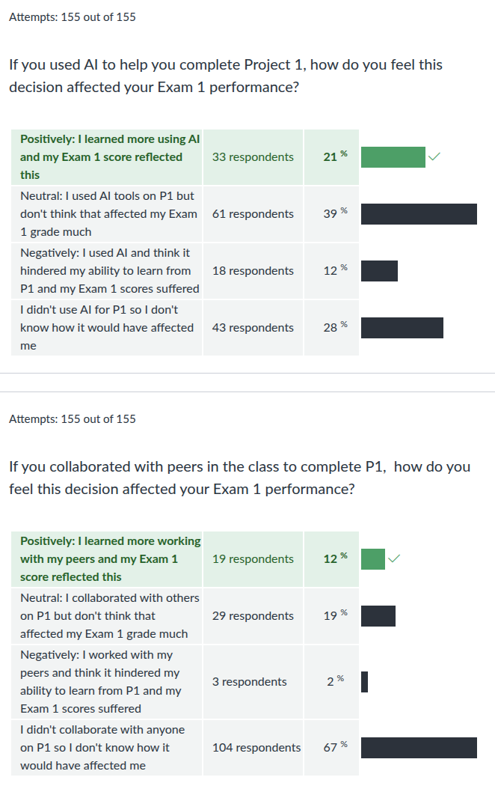
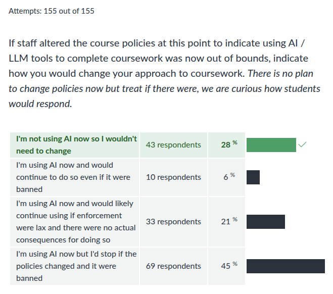
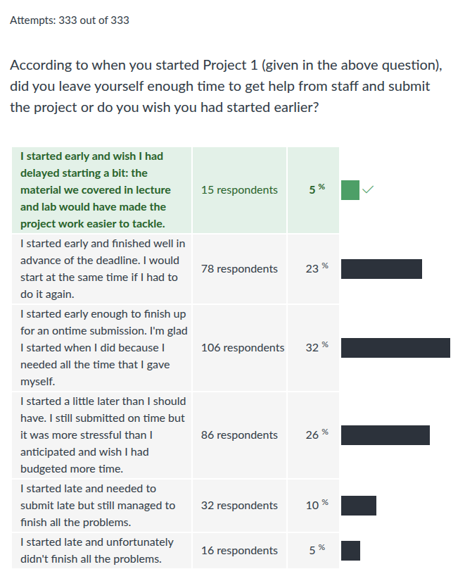
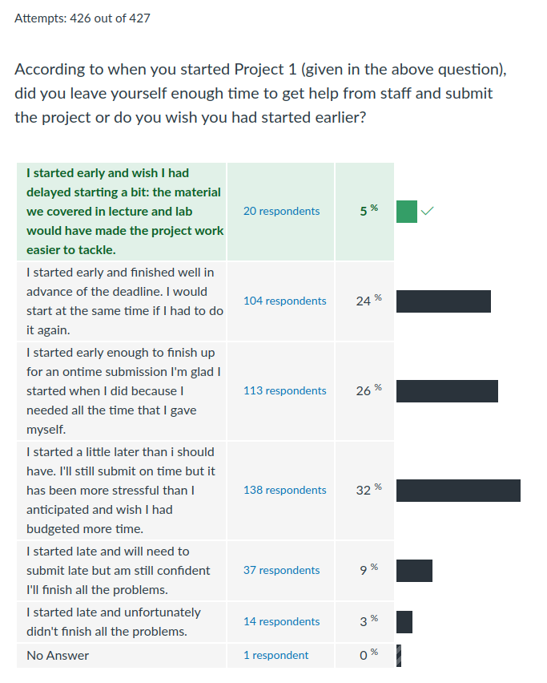

CMSC 216 F2025: Midterm Feedback Survey Results
Table of Contents
Summary Statistics for Multiple Choice Questions










Notable Comments + Responses
Instructor responses are in italics.
General Comments
I hope this class can continue 2 semesters instead of one, because there are a lot of new knowledge.
According to my resources, it used to be 2 semesters, just like it still is 2 semesters at my last university. However, the fine folks at UMD decided at some point "we're a top-20 program, our students can do it one semester." So here we are.
C is completely new to me and I feel like I struggled with the course in the beginning, but now it feels better as we move to assembly as I feel like most people are on the same page.
No one is expected to have experience with C programming. Everyone is expected to find C modestly familiar: Java is heavily influenced by it with the same syntax for code blocks, functions, variable types, etc. We talked a fair bit about what makes C distinct which is always what you look for when you approach a "new" language: none of them are really new, just rehashes of the same ideas with a few of their own quirks.
Usually, for CMSC 216 content I can get a little lost at lecture, but then I need time to sit with the material, or I go to office hours and that helps a ton. I think more students should make use of office hours even if they aren't like really struggling as they can help with small questions or even verifying answers so probably promoting office hours more would be a detail worthy of mentioning.
What a great approach. I expect most students who consume a lecture will NOT have a good grasp on the discussion but rather have become aware of something new that they are expected to practice and eventually master. Too often folks think the 75min period where I explain things is all that is needed. Hardly. The general expectation is students will spend 2-3 hours per credit outside of meetings per week for a class. Since CMSC216 is a 4-credit course, that means 8-12 hours per week just for this course working on projects, studying materials, and reading. Attending office hours is an outstanding way to spend that time to speed your absorption of material. I'm so glad you're going and hope others follow suit.
- My creating coding abilities has been hindered due to AI and I am trying to backtrack and write code myself.
- I want to be more lazy and just default to asking AI instead of taking the time to debug myself like I used to.
I feel I am relying on AI too much to understand the content. I did not do well on the first exam, which I was extremely disappointed in myself for, but I am going to learn and prepare for the next exam in order to hopefully do better. I will start attending office hours.
I'm glad that you all three are recognizing a pattern that is disruptive to your learning. As we have come to recognize heavy Social Media use has negative impacts on mental health after a couple decades of experience, so too I expect in 2045 we'll have evidence that that heavy AI-use has negative impacts on cognitive development. If you already recognize that letting the LLM do the thinking for you is stunting your growth, kick the habit and build your own skill. Use it more sparingly and do some grunt work yourself. Keep in mind that 60 years of coders have gotten things done without this new tool. You can do so also. Get help from staff just as your peer above suggested. We want you to learn and are more than willing to lend a hand.
The office hours for the instructor and TAs are mostly during my other classes so it becomes incredibly difficult to seek human help if I want it.
Sorry to hear that the schedule does not work for you. Assert yourself and email your favorite staff members to make an appointment outside of office hours. Or book an appointment with a Free CS Tutor (https://undergrad.cs.umd.edu/tutoring-resources) to get some help.
When [AI] is openly encouraged (which is what the absence of a ban comes off as), people are going to rely on it heavily, whereas when it's banned, while there are some outliers, for the most part its usage would be limited to specific problems that come up.
I do not encourage AI use nor discourage it. Do what works for you but own the consequences. My policy is to allow AI use for 3 reasons: (1) it is hard to explain what "good" and "bad" use of AI is at this stage as the technology is so new. (2) Banning its use for things like projects but then not policing its use is dishonest and I don't like being dishonest. (3) Banning AI use on projects and enforcing it is intractable at this point; I know because I am still attending Office of Student Conduct Cases from Fall 2025 in which students claim the didn't use AI but can't explain how the code they submitted works. I've spent probably 40 hours analyzing code, writing up cases, and attending OSC hearings and I've still got 5 more cases to go, each a 2-hour hearing. I am certain that students in Fall 2025 used AI and managed to escape notice: only the most blatant cases rise to the level of being able to prosecute. Putting more than 2 full weeks of work to even attempt to limit AI use is not a tractable use of time. Ergo, I'm changing with the times as most of your instructors are. Expect much lower-weights on your out of class work in future courses and much higher weights on proctored events like exams and quizzes. The whole CS department and the University at large are likely to adopt such measures in situations where we want to know if students can think critically themselves. Last I checked, that's still what college is about.
Since AI is super prominent in modern careers, try to incorporate it a bit rather than completely shaming it. (Though shame on all those people using AI to cheat!)
I don't encourage it and I don't shame it. Please don't misinterpret comments I make like "…and the LLM will regurgitate bad code like this…" as shaming: it is simply what they do, produce bad answers often enough that if you don't know what good answers look like yourself, you'll be in trouble. I'll not be incorporating direct AI use into CMSC216 anytime soon but you're free to use it in cases that you find it useful. Just be prepared: after talking to a past student over spring break who had 8 interviews over 10 days, only one of them allowed him to use AI for one technical portion. The other interviews had him critically thinking on his own. He reported being thankful that he graduated before LLMs became so prominent as he felt it helped him with critical thinking immensely, though he did find that the LLM can make for a great mock interviewer.
I struggle with the organization of my time with the projects. I'm still in the process of trying to create a schedule that balance course work for all my classes, personal life, and work..
Most of college is about learning time management. This is perhaps the most important lesson you can master and will have more far-reaching consequences than learning loops, assembly code, or functional programming. Learn what your priorities are (no one else can tell you your own priorities) and then practice allocating your time to reflect them. Learn what over-committing looks like for you (usually by crashing and burning) then practice setting a realistic balance. This is not easy but it is worth some time researching time management as it pays dividends in the long run.
When I look at code, I can usually follow the logic and understand what it is doing. However, when I try to implement something on my own, it often takes me longer to figure out how to structure the solution.
What you say is generally true for most of us: reading a story and following the narrative is much easier than constructing your own interesting and consistent story. A good way to bridge the gap between these is to modify the code you are reading, predict the effects of the change, then verify what happens. Try that with the programs in the lecture code packs as a way to study. After repeating this a bunch, you'll find you need less and less starting code to find a solution to something as you'll instead be recalling old solutions: "oh, I've done something like this before and it worked like this but I just need to alter this condition and add another nested loop in this situation." After 10 years of practice, you won't see many new patterns, just new situations to apply old patterns.
Discussion and Labs
- There have been some instances in labs where the TAs cover material that was either discussed very briefly or not yet at all in lecture, and it causes some confusion (though it usually gets cleared up for me by the end of the week). I recognize it's not always going to be perfectly aligned but if there's opportunity to communicate the current stopping point of the lecture more frequently it might help? TAs have been doing a good job, either way.
- I may be an outlier, but I wish the labs had a little more "meat" on them. I can often knock them out quickly during or right after the Monday discussion and then I waffle about attending Wednesday just for the off chance of some bonus points.
- We fall behind in lecture and then talk about topics in discussion that haven't yet been taught in lecture.
- It would be nice to do other coding examples and briefly discuss projects in the discussion.
- Worksheets would also give more practice in addition to homework and practice exams.
It's interesting to me that
- Several students in the course are asking for worksheets for discussion meetings.
- TAs soundly voted worksheets down when I entertained them during our pre-semester meetings.
I think that (1) comes from student experience in prior classes where worksheets were used in place of Labs and Homeworks. According to TAs, (2) comes from TAs perceiving worksheets as identical to filling in a QUESTIONS.txt space with answers.
If 25% of students bring me their own solutions to 75% of the ungraded practice homeworks during the semester, I'll consider killing some trees to provide paper worksheets in the future. Come to think of it, the existing HWs are essentially worksheets: just print them and voila, worksheet!
- I find that going over them (especially labs) in discussion is boring and hinders from the learning experience.
Lecture
- I appreciate that you answer questions by expanding on "the intent" or "the implication" of someone's question, because often people do not articulate it well on the spot and it ends up touching other related concepts.
- Enjoying the course so far, but I feel like the questions asked in class so the pace down and tend to be irrelevent to material, which encourages me to just watch the videos at my dorm on 2x speed.
- Friends have reported that some students have asked ChatGPT for good questions to ask. It's ridiculous.
- Rarely there are some good questions [asked in lecture]…
- I am struggling with understanding the content when I am sitting in lecture because I feel like I always have to go back and rewatch videos and look at the slides a second time to understand the content.
- Recorded lectures can encourage skipping class though
- It gets annoying sometimes when people ask questions that have already been answered or have already been said will be answered at a later date.
- I would appreciate if lecture videos were uploaded sooner.
- I also wish lectures covered topics in projects before we are given the project.
- I end up jotting them down so I can look within the slides later for the answer or ask AI to clarify what I'm missing (which has been working well).
- While I'm a quiet person and don't like asking questions in large lecture environments, other students often ask the same questions that I have which helps me learn, and it makes the class feel less rigid and stressful, and more like a chill place to come and learn.
- I genuinely hate coming to lecture in person because of the amount of questions that people ask. Some of them being so useless and dumb… I find the questions derailing from the great professor who should be able to teach us without doing Q A with students. This is why I watch the lecture video so i can skip the stupidity that people ask.
Project 1
- I start problem 1 doing it on my own, but then when the deadline approaches I have to rush to finish it and usually end up using AI to help me. I don't really use AI for anything else though, I do the labs on my own and maybe reviewed some notes with AI.
- Projects have very clear instructions and are broken down very well into management chunks.
- I think the wording for projects is very vague and there are wayyyyyy to many spelling mistakes… It is sometimes hard for me to determine where to even start, for example designing hashmapmain.c in P2.
I can't feasibly start any assignment early because there's a high chance something somewhere is messed up, which burned me in project 1 as I had done code to get around that.
According to the Project 1 CHANGELOG, two updates were issued to correct small bugs 2 days after P1 was released and 8 days before it was due. I would need much more detail to understand how that "burned" you but it's possible. I strongly recommend that you practice adaptability as you continue your studies; "agile development" and "scrums" and "extreme programming" and all that jazz are a thing precisely because software development must adapt to quickly changing conditions and requirements. While not a focus in this course, adaptability is a crucial skill in our business and life in general so you may as well start getting good at it.
- I much prefer the labs to the projects in terms of the amount of time I dedicate to them (2-3 hours, rather than dozens). I do prefer what we actually do in the projects compared to the labs though.
- For the debugging lab and P1, I felt like the directions were there but not enough push where I could do it alone.
- We didn't even start structs till a few days before the due date- this pacing makes it hard to get an early start on labs and projects, despite being encouraged to do so.
Exam 1
- I think the first exam did a good job at reflecting what we had learned up to that point, however, I would have appreciated either more practice exams or for the two practice exams we were provided to be longer, as I did not feel super confident that I would know what kinds of questions I would see on the actual exam.
- I also wish there was a little more direction in lectures of this is what you need to know for the tests and examples close to exam questions.
- I thought the exam was very fair and time management was well.
- I lost 6 points because I forgot a " - 1" from the bounds of a for loop. Even though I got this resolved and I got some points back
- I was disappointed when there weren't any multiple choice questions because things I studied could only be tested using that style of questions and now I feel like I don't need to study behavior and just know the code.
- For the midterm itself, I would appreciate less questions directly tied to the project (eg. modified functions), and more functions that conceptually have the same logic/concepts applied, but are not directly related to the project.
- Regarding exams, there shouldn't be as many. I panicked because there was an exam in the fourth week of the course. Instead of doing three exams and a final all worth 20% you should have two exams worth 25% and a final worth 30%. (20 * 4 = 25 * 2 + 30).
- I would geatly benifit from having more past exams open to be used for practice, the idea of not being able to ask friends who have taken this class for their past exams to practice is good in theory, because not everyone has a friend like that. However, people will still look for past exams, so the best way to make it fair for everyone is to make such materials available for the whole class.
- Some of the grading on exam 1 was fairly harsh, with quite a few grading mistakes on some of the problems
The Weird Ones
- TLDR: class is fine, aliens aren't real, I still can't study for the life of me, Coughman is a great professor
- Textbook being behind paywall kind of sucks (though I can pirate it hee hee). Like all I'm eating is a allat and a bag of chip; Im broke man. I got no munyuns for textbook.
- The armory makes me fall asleep
- Who you gonna call? SLOPBUSTERS!
- PSA. Sorry for my bad grammar
- It is important to learn about what is your LLM doing.
- I know the survey reader can see who submitted this, so if you have a resource that could help me rent an apartment next semester I would appreciate that.